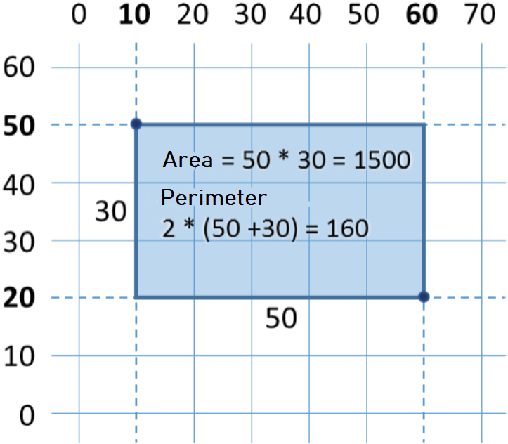

Chapter 2.1. Simple Calculations
In this chapter, we are going to get familiar with the following concepts and programming techniques:
- What is a system console?
- How to read numbers from the system console?
- How to work with data types and variables, which are necessary to process numbers and the operations between them?
- How to print (a number) on the console?
- How to do simple arithmetic operations: add, subtract, multiply, divide, string concatenation?
Videos
The System Console
The system console or the computer console, usually called just a console, represents the tool by which we give the computer commands in a text format and get the results from their execution again as a text.
Generally, the system console represents a text terminal which means that it accepts and visualizes just text without any graphical elements like buttons, menus, etc. Usually, it looks like a black-colored window, in which we write and perform console commands and print the result in the form of a text. In Windows, the console looks like this:

In most operating systems, generally, the console is available as a standalone application on which we write different console commands. In Windows, it is called Command Prompt, while in Linux and macOS, it is called Terminal. The console runs console applications. They read the text as input from the command line and print the output as text on the console. In this book, we are going to learn programming mostly through creating console applications.
This is how the console looks in Linux:

Reading Integers from The Console
In Java, we have several options to read input from the console. The one way is via the built-in class Scanner, which we will use now, and the other is via BufferedReader. The second one is a bit faster, but we will start using it after we get familiar with the streams in Java.
To read an integer (not a floating-point number) from the console we have to import the built-in class Scanner on the first line of our program even before the base class declaration. We put this line at the top:
import java.util.Scanner;
Then in the main(…) method of the program, we have to create a new Scanner instance used to attach the system input. After that (via the created scanner reader) we can read integers, floating-point numbers, text, etc. For example, with .nextInt() we read the next integer given as input:
Scanner scanner = new Scanner(System.in);
int num = scanner.nextInt();
In the example above, in the variable num of integer type int, we will have a value read as input from the console.
Java is a highly typed language this means that the variables have type determined at compile-time and can not change at the execution time (as it is in dynamic languages such as JavaScript and Python). In the example above scanner is from type java.util.Scanner (scanning text reader) and the variable num is from type int (integer number).
Reading Floating-Point Numbers From The Console
Try to rewrite the above program to accept as input data not only integers (int) but floating-point numbers (double). You can use scanner.nextDouble(). Later in this chapter, we will learn more about floating-point numbers.
Calculations in Programming
We know about computers that they are machines that process data. All data is stored in the computer memory (Random-access memory(RAM)) in variables. A variable is the name of a reserved area allocated in memory that stores data from certain types, for example, numbers or text. Each variable in Java has a name, type, and value. In the example below, you can see how to define a variable, and at the same time assign value to it:

After processing, the data is stored again in variables (somewhere in a reserved area allocated in memory by our program).
Data Types and Variables
In programming, each variable stores a certain value of a particular type. For example, data types can be a number, letter, text (string), date, color, image, list, and others. Here are some examples of data types:
- type int number: 1, 2, 3, 4, 5, …
- type double number: 0.5, 3.14, -1.5, …
- type a letter from the alphabet (symbol): 'a', 'b', 'c', …
- type text (string): "Hello", "Hi", "Beer", …
- type day of the week: Monday, Tuesday, …
Reading Floating-Point Numbers from The Console
To read a floating-point number from the console, again it is necessary to declare a variable, to point out the type of the number, and to use the standard command to read information from the system console:
Scanner scanner = new Scanner(System.in);
Double num = scanner.nextDouble();
Problem: Square Area
For example, let's look at the following program which reads an integer from the console, multiplies it by itself (squares it), and prints the result from the multiplication. That's how we can calculate square area by side length:
// Put this code in the file: SquareArea.java
import java.util.Scanner;
public class SquareArea {
public static void main(String[] args) {
Scanner scanner = new Scanner(System.in);
System.out.print("a = ");
int a = scanner.nextInt();
int area = a * a;
System.out.print("Square area = ");
System.out.println(area);
}
}
Here is how the program will work with a side having a size of 15:

If we change the number to string - "hello", we will get an exception error.

This is a normal phenomenon, because the Java language is strongly typed. Later we will earn how we can catch these type of errors and ask the user to type his input again.
How Does The Example Work?
On the first line Scanner scanner = new Scanner(System.in); create a new instance of the class Scanner with standart system code.
On the next line System.out.print("a = "); prints informative message, that asks the user to type the value for the side a of the square. If we want our next input to be on the same row we use System.out.print(…);, and not System.out.println(…); because this will move it to the next row.
On the next line int a = scanner.nextInt(); reads the integer number from the console. The result is binded to the variable a
The next command int area = a * a; defines a new variable area with the result a * a
The next command System.out.print("Square area = "); prints the text without going to a new line. Again we are using System.out.print(…);, and not System.out.println("…");.
With the last command we will print the area of the square - System.out.println(area);
Testing in The Judge System
Test your solution here: https://judge.softuni.org/Contests/Practice/Index/649#0.
Problem: Inches to Centimeters
Write a program that reads a floating-point number (representing inches) as an input from the console, converts it to centimeters, and print the result as output:
Scanner scanner = new Scanner(System.in);
System.out.print("Inches = ");
Double inches = scanner.nextDouble();
Double centimeters = inches * 2.54;
System.out.print("Centimeters = ");
System.out.println(centimeters);
Run the program and make sure that when entering a value in inches, we obtain a correct output in centimeters:

Testing in The Judge System
Test your solution here: https://judge.softuni.org/Contests/Practice/Index/649#1.
Reading and Printing Text
To read a text (string) from the console, again we declare a new variable and use the standard command for reading a text from the console:
Scanner scanner = new Scanner(System.in);
String str = scanner.nextLine();
Let's pay attention to the fact that reading text does not require converting to another type. It is this way because, by default, the method scanner.nextLine(…) returns as result text. Additionally, we can parse the text to an integer by Integer.parseInt(…) or floating-point number by Double.parseDouble(…). If we do not parse to a number, each number will be just text for the program, and we can not do arithmetic operations with them.
Problem: Greeting by Name
Write a program that reads the user's name as input from the console and greets him with the text Hello, name, where name is the name read as input data.
Scanner scanner = new Scanner(System.in);
String name = scanner.nextLine();
System.out.printf("Hello, %s!", name);
In this case, the expression %s is replaced with the first passed argument, which is the variable name:

Testing in The Judge System
Test your solution here: https://judge.softuni.org/Contests/Practice/Index/649#2.
Problem Concatenate Data
When printing text, numbers, and other data on the console we can join them by using templates %s, %d, %f, etc. In programming, these templates are called placeholders. Depending on the type of the variable, via different symbols, we declare different types of arguments. The main ones are %s for text (string), %d for integers, %f for floating-point numbers.
Here is example for printing formatted text with (placeholders):
Scanner scanner = new Scanner(System.in);
String firstName = scanner.nextLine();
String lastName = scanner.nextLine();
int age = Integer.parseInt(scanner.nextLine());
String town = scanner.nextLine();
System.out.printf("You are %s %s, a %d-years old person from %s.",
firstName, lastName, age, town);
Here is the result, which we will get after the execution of the example:

Pay attention to the order of variables in the System.out.printf() method. Each variable is in the order we want to print it and corresponds to the type in the placeholder. Essentially, the template (placeholder) accepts variables of every type.
Testing in The Judge System
Test your solution here: https://judge.softuni.org/Contests/Practice/Index/649#3.
Arithmetic Operations
Let’s look at the basic arithmetic operations in programming.
Summing Up Numbers (Operator +)
We can sum up numbers using the operator +:
int a = 5;
int b = 7;
int sum = a + b; // the result is 12
Subtracting Numbers (Operator -)
Subtracting numbers is done by the operator -:
Scanner scanner = new Scanner(System.in);
int a = Integer.parseInt(scanner.nextLine());
int b = Integer.parseInt(scanner.nextLine());
int result = a - b;
System.out.println(result);
Here is the result of the execution of the program above (with numbers 10 and 3):

Multiplying Numbers (Operator *)
For multiplication of numbers we use the operator *:
int a = 5;
int b = 7;
int product = a * b; // 35
Dividing Numbers (Operator /)
We divide numbers using the operator /. It works differently with integers and floating-point numbers.
- When we divide two integers, an integer division is applied, and the obtained output is without its fractional part. Example: 11 / 3 = 3.
- When we divide two numbers, and at least one of them is a floating-point number a fractional division is applied, and the obtained result is a floating-point number, just like in math. Example 11 / 4.0 = 2.75. When division is not with exact precision, the result is being rounded, for example, 11.0 / 3 = 3.66666666666667.
- The integer division by 0 causes an exception during runtime (
Java.lang.ArithmeticException). - The floating-point number divided by 0 does not cause an exception and the result is +/- infinity or the special value
NaN. Example 5 / 0.0 = ∞.
Here are a few examples with the division operator:
int a = 25;
int i = a / 4; // we perform the so-called integer division:
// the result of this operation will be 6 - the fractional part is cut off,
// as we perform division by integers
int f = a / 4.0; // 6.25 - fractional division. We have explicitly specified that the number 4 should be interpreted as a fraction,
// adding the decimal point followed by zero
int error = a / 0; // Error: integer division by 0
Let's look at a few examples for integer division (remember that when we divide integers in Java the result is an integer):
int a = 25;
System.out.println(a / 4); // Integer result: 6
System.out.println(a / 0); // Error: integer division by 0
Let's look at a few examples for floating numbers division. When we divide floating-point numbers, the result is always a float number and the division never fails and works correctly with the special values +∞ and -∞:
int a = 15;
System.out.println(a / 2.0); // Fractional result: 7.5
System.out.println(a / 0.0); // Result: Infinity
System.out.println(-a / 0.0); // Result: -Infinity
System.out.println(0.0 / 0.0); // Result: NaN (Not a Number), i.e. the result
// of the operation is not a valid numeric value
When printing the values ∞ and -∞ the console output may be ?, because the console in Windows does not work correctly with Unicode and breaks most of the non-standard symbols, letters, and special characters. The example above would most probably give the following result:
7.5
?
-?
NaN
Concatenating Text and Numbers
The operator + besides for summing up numbers is also used for joining text (concatenation of two strings one after another). In programming, joining text with other text or with number is called "concatenation". Here is how we can concatenate a text with a number with the operator +:
String firstName = "Maria";
String lastName = "Ivanova";
int age = 19;
String str = firstName + " " + lastName + " @ " + age;
System.out.println(str); // Maria Ivanova @ 19
Here is another example:
double a = 1.5;
double b = 2.5;
String sum = "The sum is: " + a + b;
System.out.println(sum); // The sum is: 1.52.5
Did you notice something strange? Maybe you expected the numbers a and b to be summed? The concatenation works from left to right and the result above is correct. If we want to sum the numbers we have to use brackets to change the order of execution of the operations:
double a = 1.5;
double b = 2.5;
String sum = "The sum is: " + (a + b);
System.out.println(sum); // The sum is: 4
Numerical Expressions
In programming, we can calculate numerical expressions, for example:
int expr = (3 + 5) * (4 – 2);
The standard rule for the precedence of arithmetic operations is applied: multiplying and dividing are always done before adding and subtracting. In the case of an expression in brackets, it is calculated first, but we already know all of that from math.
Problems Simple Calculations
To consolidate our knowledge of simple calculations, let's solve several problems.
Blank IntelliJ IDEA solution (Project)
We start by creating an empty solution (Project) in IntelliJ IDEA. The solutions (project) in IntelliJ IDEA combine a group of problems. This opportunity is very convenient when we want to work on a few projects and switch quickly between them or we want to consolidate logically a few interconnected projects.
In the current practical problem, we will use a Project with a couple of problems (Java classes) to organize the solutions of the problems from the problems – every problem in a separate Java class and all of them in a common project.
- We start IntelliJ IDEA.
- We create a new Project: [File] → [New] → [Project].

Select from the dialog window [Java], in the field Project SDK we specify which version of Java we will use and finally we click [Next] → [Next]:


Give an appropriate name for the project, for example "SimpleCalculations" and also where to be stored our project, and after that, we click [Finish]:

Now we have an empty IntelliJ IDEA Project (without any Java classes in it which have to be in the src folder):

The purpose of this project is to add in it .java class per problem from the problems.
Problem: Concatenating Text and Numbers
Write a Java program, that reads from the console a first name, last name, age, and city, and prints a message of the following kind: You are <firstName> <lastName>, a <age>-years old person from <town>..
Hints and Guidelines
We add to the existing IntelliJ IDEA Project one more Java class with the name "ConcatenateData". We write the code, which reads the input from the console:

You should write the code that prints the message described in the requirements.

In the picture above, the code is consciously blurred on purpose, for you to think of a way to finish it yourself.
Next, test the solution locally using [Ctrl+Shift+F10] and by entering sample input data.
Testing in The Judge System
Test your solution here: https://judge.softuni.org/Contests/Practice/Index/649#3.
Problem: Trapezoid Area
Write a program that reads three numbers from the console b1, b2, and h and then calculates the area of a trapezoid with bases b1 and b2 and height h. The formula for the area of trapezoid is (b1 + b2) * h / 2.
The figure below shows a trapezoid with bases 8 and 13 and height 7. It has an area (8 + 13) * 7 / 2 = 73.5.

Hints and Guidelines
Again, we have to add to the existing IntelliJ IDEA Project another Java class with the name "TrapezoidArea" and to write the code that reads the input from the console, then calculates the area of the trapezoid, and prints it as an output on the console:

The code on the picture is consciously blurred for you to give a thought and finish yourself.
Test your solution locally using [Ctrl+Shift+F10] and by entering sample input data.
Testing in The Judge System
Test your solution here: https://judge.softuni.org/Contests/Practice/Index/649#4.
Problem: Circle Area and Perimeter
Write a program that reads from the console a number r r then calculates and prints the area and perimeter of the circle/round with radius r.
Sample Input and Output
| Input | Output |
|---|---|
| 3 | Area = 28.2743338823081 Perimeter = 18.8495559215388 |
| 4.5 | Area = 63.6172512351933 Perimeter = 28.2743338823081 |
Hints and Guidelines
For the calculations, you can use the following formulas:
Area = Math.PI * r * r.Perimeter = 2 * Math.PI * r.
Testing in The Judge System
Test your solution here: https://judge.softuni.org/Contests/Practice/Index/649#5.
Problem: Rectangle Area
A rectangle is defined by the coordinates at two of its opposite angles (x1, y1) – (x2, y2). Calculate its area and perimeter. The input is read from the console. The numbers x1, y1, x2, and y2 are given one per line. The output is printed on the console and it has to contain two lines, each with one number – the area and the perimeter.

Sample Input and Output
| Input | Output |
|---|---|
| 60 20 10 50 |
1500 160 |
| 30 40 70 -10 |
2000 180 |
| 600.25 500.75 100.50 -200.5 |
350449.6875 2402 |
Testing in The Judge System
Test your solution here: https://judge.softuni.org/Contests/Practice/Index/649#6.
Problem: Triangle Area
Write a program that reads from the console a side and height of a triangle and calculates its area. Use the formula for triangle area: area = a * h / 2. Round the result to 2 digits after the decimal point using Math.round(area*100.00)/100.00).
Sample Input and Output
| Input | Output |
|---|---|
| 20 30 |
Triangle area = 300 |
| 15 35 |
Triangle area = 262.5 |
| 7.75 8.45 |
Triangle area = 32.74 |
| 1.23456 4.56789 |
Triangle area = 2.82 |
Testing in The Judge System
Test your solution here: https://judge.softuni.org/Contests/Practice/Index/649#7.
Problem: Celsius to Fahrenheit
Write a program that reads degrees on the Celsius scale (°C) and converts them to degrees on the Fahrenheit scale (°F). Look on the Internet for a proper formula, to do the calculations. Round the result to 2 digits after the decimal point. Here are a few sample data:
Sample Input and Output
| Input | Output |
|---|---|
| 25 | 77 |
| 0 | 32 |
| -5.5 | 22.1 |
| 32.3 | 90.14 |
Testing in The Judge System
Test your solution here: https://judge.softuni.org/Contests/Practice/Index/649#8.
Problem: Celsius to Fahrenheit
Write a program, that reads an angle in radians (rad) and converts it to degrees) (deg). Look for a proper formula on the Internet. The number π in Java programs is available through Math.PI. Round the result to the nearest integer using the method Math.round(…).
Sample Input and Output
| Input | Output |
|---|---|
| 3.1416 | 180 |
| 6.2832 | 360 |
| 0.7854 | 45 |
| 0.5236 | 30 |
Testing in The Judge System
Test your solution here: https://judge.softuni.org/Contests/Practice/Index/649#9.
Problem: USD to BGN
Write a program for the conversion of US dollars (USD) into Bulgarian levs (BGN). Round the result 2 digits after the decimal point. Use a fixed rate between a dollar and levs: 1 USD = 1.79549 BGN.
Sample Input and Output
| Input | Output |
|---|---|
| 20 | 35.91 BGN |
| 100 | 179.55 BGN |
| 12.5 | 22.44 BGN |
Testing in The Judge System
Test your solution here: https://judge.softuni.org/Contests/Practice/Index/649#10.
Problem * Currency Converter
Write a program for the conversion of money from one currency into another. It has to support the following currencies: BGN, USD, EUR, GBP. Use the following fixed currency rates:
| Exchange rate | USD | EUR | GBP |
|---|---|---|---|
| 1 BGN | 1.79549 | 1.95583 | 2.53405 |
The input consists of three lines - the first is a sum for conversion, the second is the input currency, and the third is the output currency. The output is one number – the converted value according to the above exchange rates, rounded 2 digits after the decimal point.
Sample Input and Output
| Input | Input |
|---|---|
| 20 USD BGN |
35.91 BGN |
| 100 BGN EUR |
51.13 EUR |
| 12.35 EUR GBP |
9.53 GBP |
| 150.35 USD EUR |
138.02 EUR |
Testing in The Judge System
Test your solution here: https://judge.softuni.org/Contests/Practice/Index/649#11.
Problem: 1000 Days After Birth
As an example, let us look at a program. The problem is to calculate the area of a square by a given side's length read as input from the console. The sample source code of the program is below. The code reads an integer as input from the console, multiplies it by itself (squares it), and as output prints the result from the multiplication. Save the code in a file with the name SquareArea.java, or else you will have a compile-time error:
// Put this code in the file: SquareArea.java
import java.util.Scanner;
public class SquareArea {
public static void main(String[] args) {
Scanner scanner = new Scanner(System.in);
System.out.print("a = ");
int a = scanner.nextInt();
int area = a * a;
System.out.print("Square area = ");
System.out.println(area);
}
}
Here is how the program would work when we have a square with a side's length equal to 15:
Test the program with an invalid integer (as an input), for example, "hello". You will get an error message during runtime (exception).
It is normal because Java is a highly typed language. Later on, we will find out how we can catch these kinds of errors and make the user enter a new input (a number in the example above).
How Does The Example Work?
The first line Scanner scanner = new Scanner(System.in); creates a new instance from the Scanner class with standard system input.
The following line System.out.print("a = "); prints an informative message which invites the user to enter the side a of the square. After the output is printed the cursor stays on the same line. Staying on the same line is more convenient for the user visually. We use System.out.print(…); and not System.out.println(…); and this way the cursor stays on the same line.
The following line int a = scanner.nextInt(); reads an integer from the console. The result is kept in a variable with a name a.
The following line int area = a * a; keeps the result of the multiplication of a by a in a new variable with a name area.
The following line System.out.print("Square area = "); prints the given text without going to the next line. Again, use System.out.print(…); and not System.out.println("…"); and this way the cursor stays on the same line to print the calculated area of the square afterward.
At the last line System.out.println(area); prints the calculated value of the variable area.
Testing in The Judge System
Test your solution here: https://judge.softuni.org/Contests/Practice/Index/649#0.
What Have We Learned from This Chapter?
To summarize what have we learned in this chapter of the book:
- Reading a text:
String str = scanner.nextLine();(as we have written in advanceScanner scanner = new Scanner(System.in);). - Reading an integer:
int num = Integer.parseInt(scanner.nextLine());. - Reading a floating-point number:
double num = Double.parseDouble(scanner.nextLine());. - Calculations with numbers and using the relevant arithmetic operators [
+,-,*,/,(,)]:int sum = 5 + 3;. - Printing a text by placeholders on the console:
System.out.printf("%d + %d = %d", 3, 5, 3 + 5);.